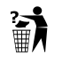

Template:Delete/eo
Jump to navigation
Jump to search

 Oni proponis forigi ĉi tiun ŝablonon. La diskutejo estas trovebla tie.
Ne forigu ĉi tiun markon antaŭ ol la diskutejo estos fermita. Kialo de la peto pri forigo: Kialo ne estis donita. BONVOLU specifi kialon, aŭ ĉi tiu aĵo estos en la kategorio por nekompletaj proponoj pri forigo. | |
NOTE: Please do not use this template directly! This is just for translation. Use {{Delete}} instead.